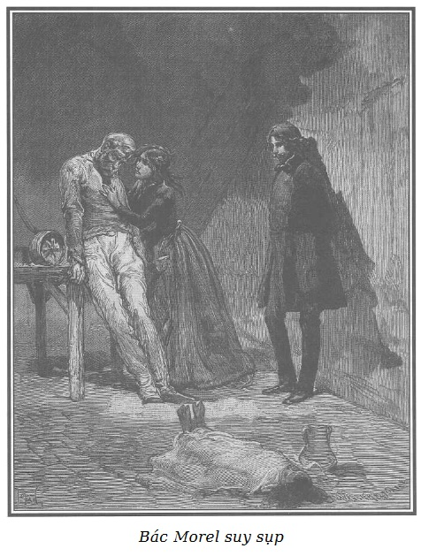

Cảnh tượng thật u ám và xót xa.
Giữa phòng tầng sát mái, như chúng tôi đã tả, thi hài đứa bé chết hồi sáng đặt trên chỗ nằm của bà lão mất trí.
Luồng sáng hiếm hoi và gay gắt lọt qua khe cửa sổ trên mái hắt vào mặt ba nhân vật những mảnh tương phản sáng tối sắc nét.

.Rodolphe đứng tựa lưng vào vách tường, xúc động vô cùng. Morel ngồi ở mép bàn nghề, đầu cúi thấp, tay buông thõng, mắt mở trừng trừng dữ tợn, không rời cái đệm trên đó đặt thi hài con bé Adèle.
Thấy xác con bé, bao nhiêu giận hờn, phẫn nộ lắng dần và trở thành nỗi buồn cay đắng khó tả, bao nhiêu nghị lực mất hết, bác quỵ hẳn trước tai họa mới.
Louise, mặt tái nhợt như người chết, muốn ngất đi, chuyện sắp phải bộc lộ ra làm cho cô sợ. Tuy nhiên, cô cũng liều run run nắm lấy tay bố, cái bàn tay khốn khổ, gầy đét, xương xẩu, biến dạng vì lao động quá sức.
Thấy bố không rút tay ra, Louise òa lên nức nở, ôm lấy bàn tay bố hôn lấy hôn để và cảm thấy bàn tay ấy áp nhẹ vào môi mình. Cơn giận của bác Morel đã nguôi, những giọt lệ vốn nén lại bấy lâu bây giờ mới rõ.
- Bố ơi, nếu mà bố biết được! - Louise kêu to. - Nếu bố biết là con đáng thương thế nào!
- Ôi, con thấy không, đấy sẽ là mối hận suốt đời của bố, Louise con ơi, suốt cả đời bố đấy, con ạ! - Người thợ ngọc khóc mà trả lời. - Trời đất ơi, con tôi! Con bị bắt bỏ tù. Con ngồi trên ghế tội phạm. Con, con vốn cao thượng… Không! - Bác lại nổi cơn đau đớn tuyệt vọng. - Không đâu! Ta muốn con cũng nằm trong tấm khăn liệm bên cạnh em gái khốn khổ của con kia kìa!
- Con cũng thế, con cũng muốn được vậy! - Louise đáp.
- Im đi con! Khốn khổ thân con, con làm bố thêm đau lòng. Bố đã quá lời với con, bố đã hơi quá đấy. Nào, nói đi con. Nhưng nhân danh Chúa, đừng nói dối, con ạ! Sự thật dù có tàn tệ, ghê gớm đến đâu, con cũng cứ nói bố nghe. Bố phải được biết sự thật từ miệng con nói ra, như thế đỡ xót xa hơn. Nói đi con! Than ôi, có nhiều thì giờ đâu! Dưới kia họ đòi con đấy! Ôi, khổ quá! Biệt ly khổ đến thế này. Trời cao đất dày ơi!
- Bố ơi, con sẽ nói bằng hết. - Louise lấy hết nghị lực mà nói. - Nhưng cả bố, cả vị ân nhân kia, cả hai người đều phải hứa là đừng hở ra cho ai biết đấy. Không thể để cho một ai biết! Nếu hắn biết con nói ra, bố và ông thử nghĩ xem… Chao ôi, - cô rùng mình sợ hãi nói tiếp - ngay cả ông và bố cũng sẽ bị hại thôi, như con ấy, vì mọi người chưa thấy cái thế lực và sự tàn bạo của con người ấy đâu.
- Người nào kia?
- Chủ của con ấy!
- Tên chưởng khế à?
- Vâng, đúng thế! - Louise nói rất khẽ và nhìn quanh như sợ có ai đó nghe thấy.
- Cứ yên tâm, cháu ạ! - Rodolphe tiếp lời. - Con người ấy tàn bạo và thế lực thật đấy nhưng cần gì, chúng ta sẽ đối phó với hắn. Vả lại nếu ta tiết lộ những gì cháu sắp nói ra thì đó chỉ là vì lợi ích của cháu hoặc bố cháu mà thôi.
- Và bố cũng vậy, Louise, nếu bố có nói ra, thì cũng để cứu lấy con. Nhưng thôi, hắn còn làm những gì nữa, cái quân độc ác ấy?
- Chưa hết đâu, - Louise nói sau một hồi suy nghĩ - trong câu chuyện này có liên quan đến một người đã giúp con một việc lớn. Người ấy đã đối xử rất tốt với bố và gia đình nhà ta, người ấy hiện đang giúp việc cho lão Ferrand khi con đến đấy đi ở, người ấy buộc con thề là không được nói tên người ấy ra.
Rodolphe nghĩ ngay có thể là François Germain, nên bảo với Louise:
- Nếu cháu muốn nói đến cậu François Germain thì cháu cứ yên tâm, điều bí ẩn của cậu ta sẽ được bố cháu và ta giữ kín.
Louise ngạc nhiên nhìn Rodolphe.
- Thưa, ông biết cậu ấy à?
- Sao lại không? Cái cậu tốt bụng, chàng trai tuyệt vời ấy trước kia đã ở đây ba tháng, làm việc ở văn phòng tên chưởng khế khi con bắt đầu vào làm tại đấy chứ gì? - Bác Morel bảo. - Lần đầu thấy cậu ấy ở đây, con đã ra vẻ như không quen biết cậu ấy, phải không?
- Đó là quy ước chung, bố ạ. Cậu ấy có nhiều lý do quan trọng để cần phải giấu việc cậu làm việc ở văn phòng lão Ferrand. Chính con đã mách cho cậu cái buồng ở gác bốn nhà này lúc ấy chưa có ai thuê, biết thế nào cậu cũng sẽ là láng giềng tốt với nhà ta.
Rodolphe hỏi:
- Nhưng ai mách mối cho cháu đến ở nhà tên chưởng khế vậy?
- Lúc mẹ cháu ốm, tôi có nói với bà Burette làm nghề cho vay cầm đồ cũng ở tại ngôi nhà này là cháu Louise muốn đi ở cho người ta để giúp đỡ gia đình. Bà Burette vốn quen biết người đàn bà làm quản gia cho lão chưởng khế, bà đã đưa cho tôi một lá thư gửi gắm giới thiệu cháu Louise với mụ quản gia như là một mối tốt. Có mà chết tiệt! Cái lá thư chết tiệt! Mọi nỗi khổ của chúng tôi cũng từ lá thư đó mà ra. Tóm lại, ông ạ, con gái tôi vào làm công cho lão chưởng khế là vì thế đấy.
- Trong những buổi đầu cháu ở nhà hắn, cháu không phải phàn nàn điều gì. Cháu phải làm rất nhiều việc, mụ quản gia thì hay hạch sách, mắng mỏ, cái nhà thì buồn tênh, nhưng cháu vẫn kiên trì chịu đựng. Công việc là công việc, ở đâu cũng thế, ở đâu mà chẳng phải chịu đựng những chuyện không vừa ý mình. Lão Ferrand thì mặt mũi nghiêm nghị, đi lễ chầu ở nhà thờ, chiêu đãi các vị linh mục, cháu không có điều gì phải ngờ vực cả. Ban đầu thì lão chẳng buồn nhìn đến cháu, nói với cháu rất nghiệt ngã, nhất là khi có khách lạ. Ngoài người gác cổng ở phía đường phố, trong khu nhà văn phòng, chỉ có cháu là người hầu gái cùng với bà Séraphin, người quản gia. Nơi ở của bọn cháu là một cái nhà lớn tồi tàn đứng tách riêng, giữa sân và khu vườn. Buồng của cháu ở trên gác, ban đêm nhiều khi chỉ có một mình buồn chán, hoặc nấu bếp trong tầng hầm, hoặc trong phòng ngủ, cháu thấy rất sợ. Đêm đêm hình như có tiếng động trầm trầm và kỳ quái ở tầng dưới, nơi không một ai ở và chỉ có cậu Germain là hay đến làm việc vào ban ngày. Cửa sổ tầng dưới ấy thì có gạch xây kín và cửa ra vào rất dày có nẹp sắt kiên cố. Ngay từ đầu, người quản gia đã cho cháu biết nơi ấy là nơi để két sắt đựng tiền của lão Ferrand. Một hôm, cháu thức rất khuya để vá vội mấy thứ cho xong, khi cháu sửa soạn đi nằm thì bỗng nghe tiếng bước chân đi nhè nhẹ trong hành lang nhỏ dẫn đến buồng cháu, có người đứng lại trước cửa. Lúc đầu cháu đoán là mụ quản gia, nhưng không thấy ai vào, cháu phát hoảng, cháu không dám cựa quậy, lắng nghe động tĩnh, bên ngoài cũng không thấy có tiếng động nhưng cháu biết chắc chắn là có người ở ngoài cửa buồng. Cháu hai lần lên tiếng hỏi “Ai đấy?” nhưng không thấy ai trả lời. Càng sợ hơn, cháu bèn đẩy cái tủ com-mốt để chắn cửa ra vào, vì cánh cửa vốn chẳng có chốt khóa. Cháu vẫn lắng nghe, chẳng thấy động tĩnh gì. Sau nửa giờ, mà sao cháu thấy lâu thế, cháu mới dám lên giường ngủ, cả đêm vẫn yên tĩnh. Sáng ra, cháu bèn kể lại chuyện hồi đêm và xin phép bà quản gia cho lắp cái chốt cửa vì cánh cửa không có ổ khóa. Bà ấy trả lời là cháu nằm mơ đấy, vả chăng cũng còn phải xin với lão Ferrand kia. Khi cháu xin thì lão nhún vai và bảo là cháu hóa rồ nên cháu không dám nài thêm. Sau đó ít lâu xảy ra tai vạ bố cháu bị mất viên ngọc. Bố cháu tuyệt vọng, không biết làm thế nào. Cháu kể nỗi buồn phiền lo lắng ấy cho bà Séraphin nghe thì bà ấy bảo: “Ông chủ nhà này rất từ thiện, hẳn sẽ tìm cách nào đấy để giúp cho bố cô thôi.” Ngay tối hôm đó, giữa lúc cháu đang hầu cơm, lão Ferrand bỗng bảo cháu: “Bố cô đang cần một nghìn ba trăm franc. Tối nay về bảo ông ấy ngày mai đến văn phòng, sẽ có tiền. Ông ấy là người đứng đắn, đáng được quan tâm giúp đỡ.” Trước biểu hiện nhân đức ấy, cháu òa lên khóc sướt mướt, chẳng còn biết cảm ơn ông chủ như thế nào. Lão lại bảo với cháu bằng cái giọng thô bạo thường ngày: “Được, được! Đối với ta, việc đó là thường.” Sau khi làm xong công việc, cháu về nhà báo tin mừng cho bố cháu, thế là sáng ngày hôm sau…
Bác Morel chen vào:
- Tôi nhận được một nghìn ba trăm franc nhưng phải ký vào một hối phiếu khống chỉ kỳ hạn ba tháng. Tôi cảm kích đến chảy nước mắt chẳng khác gì cháu Louise, tôi gọi lão là ân nhân, là cứu tinh. Chao ôi, lão có độc ác như thế mới mất cả ơn huệ, mất cả lòng sùng kính của tôi đối với lão.
- Cái kiểu thận trọng bắt bác phải ký nhận vào hối phiếu với kỳ hạn ngặt nghèo, gấp gáp, khó xoay xở mà trả cho kịp, không làm cho bác nghi ngờ sao?
- Thưa ông, không ạ, tôi cho là lão chưởng khế làm như vậy là để chắc chắn mà thôi, vả lại lão còn bảo là tôi chưa cần phải lo trả ngay trước hai năm. Mỗi quý chỉ cần ký gia hạn thêm hối phiếu cho đúng thủ tục là đủ. Tuy vậy, mới đến hạn kỳ ba tháng, họ đem giấy tờ đến đòi tiền, tôi không trả được. Nấp dưới danh nghĩa một người khác, lão được tòa xử cho thắng kiện nhưng lão lại nhắn với tôi là không có gì phải lo sợ cả, đó chỉ là do sự lầm lẫn của người mõ tòa làm việc với lão.
- Hắn làm như vậy là để thao túng bác trong vòng thế lực của hắn đấy!
- Than ôi, đúng đấy ông ạ! Và cũng từ ngày vụ kiện được xử mà hắn bắt đầu… Nhưng nói nốt đi Louise, nói nốt đi con. Bố cũng chẳng biết bố nói đến đâu nữa, đầu óc bố đang quay cuồng đây này. Bố có lúc như lẫn hết cả. Bố đang muốn phát điên lên đây này. Thật là quá quắt! Thế đấy, thật là quá quắt!
Rodolphe lại khuyên ngăn người thợ ngọc. Louise kể tiếp:
- Cháu ra sức hầu hạ để tỏ lòng biết ơn trước cách đối xử tốt của lão chủ. Mụ quản gia thấy thế lại càng ghét cay ghét đắng, mụ ấy chỉ thích hạch sách cháu, lão Ferrand có truyền bảo gì cháu thì mụ ấy làm lơ, chẳng hề dặn dò gì, để cho cháu làm hỏng việc. Cháu rất khổ sở vì những chuyện khó chịu ấy, chỉ muốn kiếm nơi khác đi làm cho nhẹ mình, nhưng vì bố cháu chịu ơn lão chưởng khế nên cháu không thể bỏ mà đi được. Lão Ferrand đã cho vay tiền được ba tháng, lão vẫn tiếp tục đối xử thô bạo với cháu trước mụ Séraphin. Tuy nhiên, đôi lúc lão lén nhìn trộm cháu làm cháu lúng túng và lão mỉm cười khi thấy cháu đỏ mặt.
- Ông hiểu không, thưa ông? Lúc đó hắn đang xin tòa cho câu thúc thân thể tôi đấy!
Louise nói tiếp:
- Một hôm, mụ quản gia, khác với thói quen thường ngày, bỏ ra ngoài. Sau buổi ăn tối, các thầy thông sơ rời khỏi văn phòng, họ vốn ở bên ngoài mà. Lão Ferrand sai người gác cổng đi làm việc gì đó, chỉ có mình cháu ở nhà. Cháu đang làm việc ở phòng ngủ của lão. Lão đứng trước lò sưởi, cháu vừa lại gần thì lão quay phắt người ôm chầm lấy cháu. Mặt lão đỏ như tiết, mắt lão long sòng sọc. Cháu sợ chết khiếp, sợ đến cứng đờ cả người. Tuy lão rất khỏe, cháu vẫn cố vùng vẫy và thoát khỏi vòng tay lão. Cháu chạy ra ngoài phòng đợi, cháu đẩy cửa và cố hết sức lấy thân mình chặn lấy cửa vì khóa cửa ở phía lão.
- Ông nghe cháu nói đấy, thưa ông, tư cách của lão ân nhân đáng kính là như thế đó. - Bác Morel phân bua với Rodolphe.
- Sau một hồi lâu, do lão đẩy mạnh, cửa bật ra, nhưng may sao cái đèn ở trong tầm tay của cháu, cháu kịp tắt ngay được. Phòng đợi cũng xa căn phòng lão ở. Căn buồng tối om như mực, lão gọi cháu, cháu không thưa. Lão bèn run run giận dữ bảo cháu: “Nếu cô định thoát khỏi tay tôi thì bố cô sẽ đi tù vì không trả được món nợ một nghìn ba trăm franc của tôi.” Cháu xin lão thương cháu, cháu hứa là sẽ làm tất cả mọi việc để hầu hạ lão đến nơi đến chốn mà đền ơn trả nghĩa tấm lòng của lão, nhưng cháu cũng nói thẳng thừng là không gì bắt cháu phải chịu nhục tấm thân cả.
- Đúng là khẩu khí của cháu Louise đấy, nó biết là nó có quyền được giữ phẩm giá cao quý mà! Nhưng rồi sao nữa, nói đi con, nói nốt đi con!
- Cháu vẫn ở trong bóng tối, sau một lúc cháu nghe thấy tiếng cửa phòng đợi đóng sập lại, lão chủ đã lọ mọ tìm ra được cánh cửa ấy. Như thế là lão đã dồn được cháu vào thế bí, lão chạy về buồng và đem đèn ra. Cháu không dám kể hết cho ông nghe cháu đã phải chống trả như thế nào trước những lời dọa dẫm và những cuộc đuổi bắt qua hết phòng nọ đến phòng kia. May sao vì tuyệt vọng, sợ hãi, căm giận mà cháu càng khỏe ra. Thấy cháu chống cự kịch liệt, lão tức điên người. Không còn tự chủ được nữa, lão hành hung cháu, đánh cháu chảy cả máu mặt, máu mũi.
- Trời đất ơi, trời đất ơi! - Bác thợ ngọc đưa cả hai tay lên trời. - Tội phạm như thế mà không có sự trừng phạt nào cho con quỷ ấy à?
- Làm gì có!
Rodolphe dường như có suy nghĩ sâu xa, quay sang Louise:
- Hẳn sẽ có chứ! Can đảm lên, cứ nói cho hết đi cháu ạ!
- Cuộc chống trả ấy khá lâu, cháu sắp đuối sức thì bỗng bác gác cổng vừa về, gõ liền hai tiếng, thông báo có thư. Sợ rằng nếu cháu mà không ra nhận thì bác ta sẽ vào, lão Ferrand bèn quát: “Cút ra! Mày mà hở ra một tiếng là khổ bố mày ngay. Mày mà đi khỏi nhà tao, bố mày cũng nguy. Nếu có sai người ta đến hỏi ý kiến ta để mà thuê mày, thì tao cũng sẽ làm cho người ta không muốn nhận. Tao sẽ nói mập mờ để người ta hiểu là mày hay ăn cắp vặt. Tao còn nói mày là một đứa ở đáng ghét, không nên rước làm gì.” Ngay buổi sáng hôm sau, mặc kệ lão chủ hăm dọa, cháu chạy về nhà nói hết cho bố cháu biết. Bố cháu muốn cháu lập tức bỏ ngay, không ở cái nhà ấy thêm một ngày nào nữa nhưng lại e tù tội. Công xá của cháu dù ít dù nhiều vẫn là cần thiết cho cả nhà cháu, từ ngày mẹ cháu ốm. Những lời lão Ferrand đe dọa chắc hẳn sẽ làm cho cháu còn lâu mới tìm được việc làm.
Morel cay đắng ủ ê, gật gật đầu:
- Đúng đấy, gia đình chúng tôi đã quá nhụt, quá ích kỷ để cho cháu nó quay về cái nhà đó. Ôi, tôi đã bảo với ông mà, cái nghèo, cái nghèo nó làm cho con người ta phải liều nhắm mắt đưa chân, ô nhục biết bao.
- Than ôi! Bố ơi, bố đã chẳng tìm mọi cách để có được một nghìn ba trăm franc đó sao? Không có cách nào thì chúng ta đành phải chịu thôi!
Bác thợ ngọc gục mặt vào hai bàn tay:
- Thôi, thôi, nói nốt đi con! Bố mẹ đã làm tội con, bố mẹ còn tội lỗi gấp mấy con nữa vì đã để cho con ra nông nỗi này.
- Lúc cháu gặp lại lão chủ, lão đối xử với cháu vẫn như mọi khi, nghĩa là vẫn thô bạo và cay nghiệt. Lão không thèm nói với cháu một lời về chuyện đã qua, mụ quản gia thì tiếp tục hạch sách, không cho cháu ăn đủ no, bánh mì cũng cho vào tủ khóa lại, đôi lúc còn vấy bẩn vào thức ăn trước mặt cháu, những thức ăn thừa để lại cho cháu vì mụ thường ngồi cùng bàn với lão Ferrand. Đêm đến, cháu không dám ham ngủ vì mỗi lúc lại sợ lão chưởng khế mò vào vì buồng cháu để ngỏ. Lão cho khênh cái tủ com-mốt đi nơi khác để cháu không còn có cái chặn cửa nữa, cháu chỉ còn có một cái ghế, một cái bàn nhỏ và một cái rương. Cháu định dùng những cái đó để cố thủ, và cháu để nguyên quần áo để ngủ. Được ít lâu, lão để cháu yên thân, thậm chí lão không nhìn mặt cháu. Cháu đã hơi hơi yên dạ, cho rằng lão thôi không để ý đến cháu nữa. Vào một ngày Chủ nhật, lão cho cháu được ra ngoài. Cháu về báo cho bố mẹ cháu biết để mọi người cùng mừng. Mãi đến lúc ấy, bố mới biết hết tất cả, bố ạ! Còn những gì cần phải nói nốt, - giọng Louise run run - thì ghê gớm quá, con vẫn cứ giấu bố!
- Ái chà, tao biết mà! Tao biết chắc chắn là mày vẫn có điều gì giấu kín không cho tao biết. - Bác Morel quát to, thẫn thờ nhưng nói liến láu khác thường làm Rodolphe ngạc nhiên. - Nước da xanh xao, mặt mày tái mét, lẽ ra tao đã phải đoán ra chứ! Tao đã bảo với mẹ mày hàng trăm lần như thế. Nhưng kệ, kệ tất cả… Mẹ mày cứ trấn an tao. Rõ là nó đấy nhé, để cho khỏi khổ mà để cho con ở chốn miệng hùm hang sói, ở cái nhà của con quỷ ấy! Con gái ta nó phải đi đến đâu nào? Đến cái ghế dành cho bọn can án hình sự ngồi. Rõ là nó đấy nhé! Chao ôi, nhưng cũng thế cả thôi. À mà, biết đâu nhỉ? Về việc ấy… chà, là vì nghèo. Nhưng còn những kẻ khác, mặc kệ. - Rồi bác ngừng lời. Dường như là để cố tập trung những ý nghĩ cứ băng đi, bác Morel vỗ vỗ vào đầu và kêu to:
- Ô này, tôi không biết tôi đã nói những gì! Đau đầu quá! Cứ như bị chuếnh choáng hơi men thế này!
Bác lại vùi đầu vào hai bàn tay.
Rodolphe không muốn để cho Louise thấy mình lo sợ rất nhiều trước những lời nói lảm nhảm của bác thợ ngọc, ông nghiêm nghị nói:
- Này, bác Morel, bác nói không đúng đâu! Chẳng phải vì bản thân bác gái mà còn vì bà mẹ, vì cả mấy đứa con, vì cả bác nữa đấy! Tội nghiệp bác gái, bác ấy sợ những hậu quả tai hại nếu cháu Louise đi khỏi nhà lão chưởng khế. Đừng đổ tội cho ai cả. Bao nhiêu lời nguyền rủa, bao nhiêu căm hờn chỉ nên đổ vào đầu một đứa thôi! Vào cái con quỷ đạo đức giả ấy, nó đã bắt một đứa con gái phải lựa chọn giữa ô nhục và gia đình tan nát, với bố và cả gia đình chết đói. Đổ vào đầu cái thằng cậy là ông chủ mà làm những điều bỉ ổi. Nhưng cứ cố chờ mà xem! Ông trời thường bắt kẻ gây tội ác phải chịu những cuộc trả oán kỳ dị và khủng khiếp!
Lời Rodolphe nói về việc trời báo oán sau này có thể là đúng và chắc chắn như đinh đóng cột, khiến Louise nhìn vị ân nhân của mình vừa ngạc nhiên, và gần như sợ sệt nữa.
- Hãy nói tiếp đi, con ạ! - Rodolphe bảo với Louise. - Đừng giấu chúng ta bất cứ điều gì. Điều đó còn quan trọng hơn con tưởng rất nhiều.
- Lúc đầu, cháu đã hơi yên dạ. Bỗng một buổi tối, lão Ferrand và mụ Séraphin, mỗi người đi một phương. Họ không ăn cơm nhà, cháu ở lại một mình như thường lệ, họ để lại phần nước uống cho cháu, bánh mì và rượu vang sau khi đã khóa tủ buýp-phê. Làm xong việc, cháu ăn tối và vì chỉ có mỗi một mình ở nhà, cháu thắp đèn ở buồng lão Ferrand rồi lên buồng mình. Khi lão ra khỏi nhà thì chẳng ai đợi cửa bao giờ. Cháu làm việc và khác với mọi ngày, dần dần cháu thấy buồn ngủ. Ôi, bố ơi. - Louise kêu lên và sợ sệt dừng lại. - Ông và bố cháu có lẽ không tin đâu, còn cho rằng cháu bịa đặt cũng nên. Và, đây, trên thi hài đứa em khốn khổ của cháu, cháu xin thề rằng, cháu nói đúng sự thực.
- Cháu cứ trình bày đi!
- Than ôi, thưa với ông, đã bảy tháng nay cháu cứ nghĩ mãi mà không sao hiểu được chuyện gì đã xảy ra vào cái đêm khủng khiếp ấy. Không tài nào hiểu được! Cháu suýt nữa phát điên vì cố tìm ra điều bí ẩn ấy.
- Trời đất ơi, trời đất ơi! Con tôi nó sắp nói điều gì đây! - Bác thợ ngọc la to, bừng tỉnh khỏi cơn mê vẫn dửng dưng đến với bác từng cơn từ khi bắt đầu câu chuyện.
- Khác hẳn với mọi lần, cháu ngủ gục trên ghế. Cháu chỉ nhớ được đến thế. Trước đó, trước đó… Ôi, bố ơi, bố tha cho con, con thề là con không hề phạm lỗi… vậy mà…
- Ta tin con! Ta tin con! Nói đi con ơi!
- Cháu không biết cháu chợp mắt đi bao lâu, đến lúc thức dậy thì cháu vẫn ở trong buồng, nhưng nằm bên cạnh lão Ferrand và đã bị lão làm nhục rồi…
- Mày nói láo! Mày nói láo! - Bác thợ ngọc nổi giận. - Hãy thú nhận là mày đã nhượng bộ để bị cưỡng bức, vì sợ tao bị bỏ tù, chứ đừng nói láo như thế!
- Bố ơi, con xin thề với bố…
- Mày nói láo, mày nói láo! Thế thì tại sao lão chưởng khế lại còn muốn bỏ tù tao? Chính mày đã chịu hiến thân cho lão cơ mà?
- Hiến thân cho lão? Không đời nào! Không đâu, bố ơi, con ngủ say như chết kia mà. Điều đó bố cứ cho như là kỳ quái, là không thể có hay sao? Trời đất ơi, tôi biết mà… Đến lúc này, chính tôi vẫn còn chưa hiểu được.
- Và ta, thì ta hiểu hết! - Rodolphe ngắt lời. - Thằng đó đâu có bỏ lỡ tội ác nào mà không dám làm. Đừng có đổ cho con bác nói dối, bác Morel ạ! Louise, cháu hãy nói ta biết, khi cháu ăn cơm, trước khi lên buồng riêng, cháu có thấy nước uống có vị gì khác lạ không? Cháu thử cố nhớ lại lúc đó xem thế nào?
Sau một giây suy nghĩ, Louise đáp:
- Cháu nhớ rồi, quả thực là thế, thứ rượu vang chế vào nước lã mọi khi mụ Séraphin thường cho cháu uống hôm ấy hơi đăng đắng. Cháu không để ý lắm bởi mụ quản gia đôi khi cũng hay chơi khăm bỏ muối hoặc hồ tiêu vào đó.
- Hôm ấy cháu uống thấy hơi đắng phải không?
- Thưa ông, vâng, nhưng không đến nỗi khó uống, cháu cứ cho là rượu vang trở chua.
Bác Morel, mắt mở trừng trừng nhớn nhác, nghe những câu hỏi và câu trả lời của Rodolphe và Louise mà không hiểu gì cả.
- Trước khi ngủ gục trên ghế, cháu có thấy váng đầu nặng chân không?
- Đúng thế thưa ông! Thái dương cháu giần giật, cháu thấy hơi rùng mình khó chịu.
- Chà chà, thằng khốn kiếp! Quân khốn nạn! - Rodolphe thét to. - Morel, bác có biết thằng đó cho con gái bác uống thứ gì không?
Người thợ ngọc nhìn Rodolphe không trả lời.
- Mụ quản gia đồng lõa với hắn đã pha thuốc ngủ vào nước uống của Louise, chắc là thuốc phiện. Sức lực, ý chí của cháu bị tê liệt trong mấy tiếng đồng hồ, tỉnh dậy sau giấc ngủ lịm như chết ấy thì cháu bị làm nhục rồi còn gì nữa.
- Chao ôi! - Louise la to, nỗi nhục oan ức của cháu đến giờ mới được sáng tỏ. - Đấy bố ơi, bố có thấy không, con đâu có tội như đã tưởng. Bố ơi, bố hãy trả lời con đi nào!
Con người mộc mạc lương thiện như bác không tài nào nghĩ đến một sự đồi bại kinh khủng như vậy được. Bác hầu như không hiểu được phát hiện ghê gớm ấy.
Vả lại, cũng cần phải nói là có một đôi lúc bác gần như mất trí, từng lúc ý nghĩ của bác lại mù mịt đi, thế là bác rơi vào cái hư không của tư duy mà như thế thì đối với trí tuệ con người có khác nào bóng tối đối với thị giác, triệu chứng kinh khủng của bệnh thần kinh.
Tuy nhiên, bác Morel nói tiếp với giọng khản đục, cộc lốc và hấp tấp:
- Ồ, đúng vậy! Tồi quá, tồi quá, tồi quá!
Và quay về trạng thái vô cảm.
Rodolphe nhìn bác và lo lắng, ông tin rằng hiệu lực của bất bình bắt đầu suy kiệt ở con người khốn khổ này, khác nào sau những cơn đau khổ ghê gớm, người ta không còn đủ nước mắt để khóc nữa.
Muốn chấm dứt nhanh cuộc trao đổi buồn thảm, Rodolphe bảo Louise:
- Hãy can đảm lên, con ạ, vạch trần những điều ghê tởm ấy ra.
- Than ôi, thưa ông, những điều ông vừa nghe thấy còn chưa đáng kể. Thấy lão Ferrand nằm cạnh, cháu hét lên vì sợ hãi. Cháu muốn trốn chạy, lão dùng sức giữ cháu lại, cháu thấy người mới mệt làm sao! Chân tay bủn rủn, dĩ nhiên là do cái thứ thuốc mê mà ông đã nói đến ấy, cho nên cháu không tự giằng ra khỏi lão được. “Bây giờ mày còn chạy làm gì nữa?” - Lão Ferrand ngạc nhiên bảo thế, làm cháu sững người ra. - “Sao mày nhõng nhẽo thế? Mày không ưng ý thì làm sao tao có mặt ở đây được?” Ái chà, ông ạ, thật vô liêm sỉ. Cháu quát to: “Ông đã lợi dụng lúc tôi ngủ say để hại tôi! Bố tôi rồi cũng sẽ biết.” Lão phá lên cười: “Tao mà lợi dụng lúc mày ngủ à? Tao ấy à? Mày định đùa chắc! Mày có làm cho ai tin vào lời nói bịa đặt của mày được không? Lúc này đã bốn giờ sáng, tao ở đây từ lúc hai giờ. Sao mày ngủ lâu thế? Cố tình mà ngủ dai thế? Nói đúng hơn là tao thấy mày có thiện ý thì tao mới hưởng, mày không chối được đâu. Thôi đi, đừng có õng ẹo như thế nữa, kẻo tao lại bực mình. Bố mày ở trong tay tao, mày chẳng có lý do gì để mà chối tao, cứ ngoan ngoãn đi thì tốt đẹp cả, bằng không thì liệu hồn!” - “Tôi sẽ mách hết với bố tôi! - Cháu quát lên. - Bố tôi sẽ trả hận cho tôi. Còn có công lý nữa chứ!” Lão Ferrand nhìn cháu ngạc nhiên: “Mày điên rồi sao? Và mày sẽ nói như thế nào với bố mày? Bố mày có thỏa thuận với mày tiếp tao ở đâu à? Tùy mày đấy! Mày sẽ thấy bố mày xử trí với mày ra sao!” - “Trời đất ơi, nói láo! Ông cũng biết là tôi có cho ông lên đây đâu! Ông cứ bất chấp.” - “Tao mà bất chấp à? Mày có dám trâng tráo bào chữa cho câu chuyện bịa đặt ấy không, có dám nói đến chuyện cưỡng bức không? Mày muốn có chứng cứ về sự dối trá của mày không? Tối hôm qua tao đã ra lệnh cho Germain - thủ quỹ của tao quay lại đây lúc mười giờ để làm việc, đến một giờ sáng, ở ngay dưới phòng này. Liệu anh ta có nghe thấy tiếng mày kêu la, chống lại tao ầm ĩ như lần trước không, hở cái đồ láo toét kia? Hôm đó mày đâu có biết điều như hôm nay. Này, mai mày cứ hỏi Germain xem, anh ta sẽ quả quyết khẳng định là đêm vừa qua nhà này hoàn toàn yên tĩnh cho mà xem!”
- Ôi, hắn đã đề phòng đủ mọi mặt, để chắc chắn tránh khỏi tội. - Rodolphe nói.
- Vâng, đúng là như vậy, thưa ông, vì lúc đó cháu đã rụng rời. Tất cả những điều lão nói ra, cháu không biết trả lời ra sao cả, không biết đã bị lão cho uống thứ thuốc mê gì mà cháu không thể hiểu được tại sao mình lại ngủ dai đến thế. Mọi hiện tượng bên ngoài sẽ lên án cháu. Điều đó là tất nhiên vì ngay đối với cháu, cái đêm kinh khủng ấy vẫn còn là một điều huyền bí không thể hiểu được!